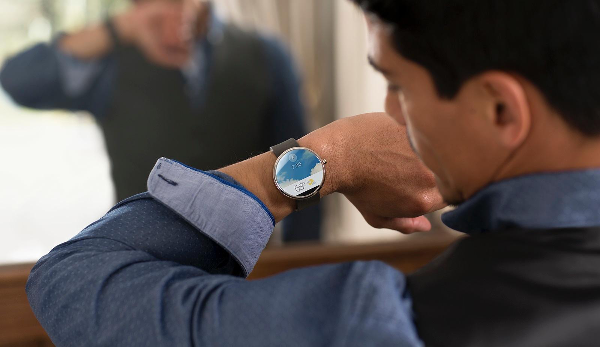
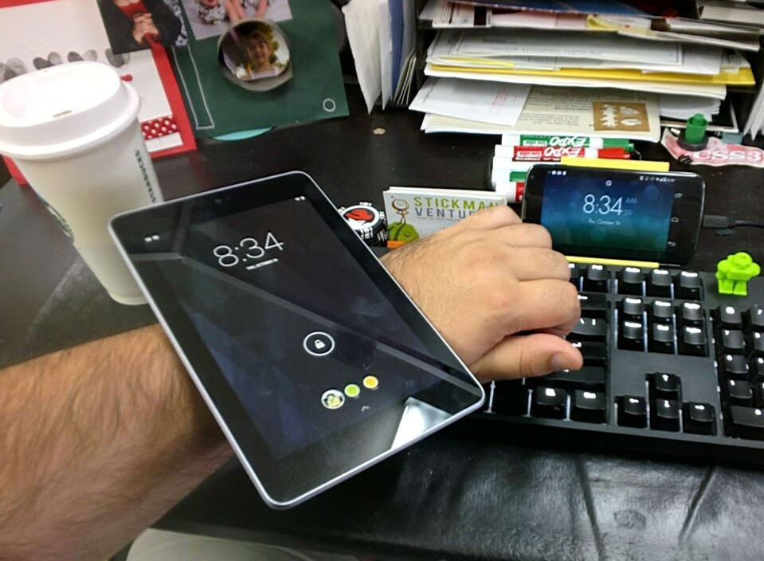
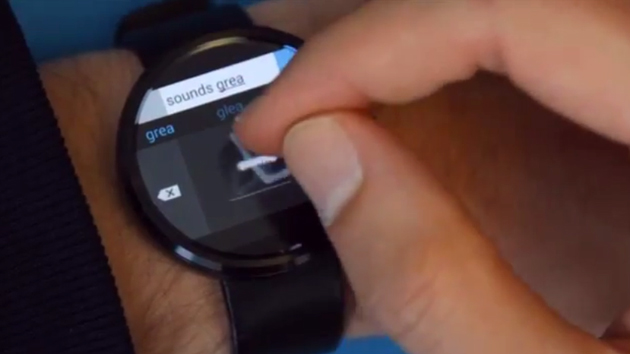
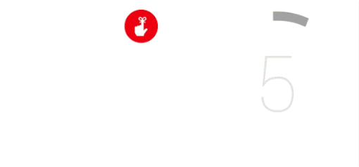
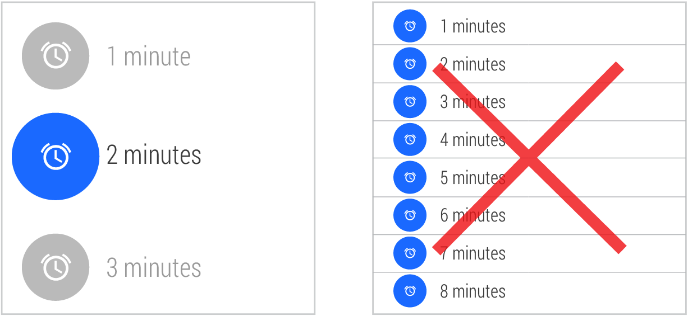
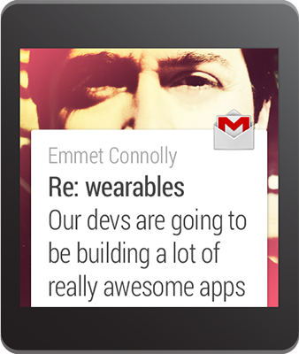
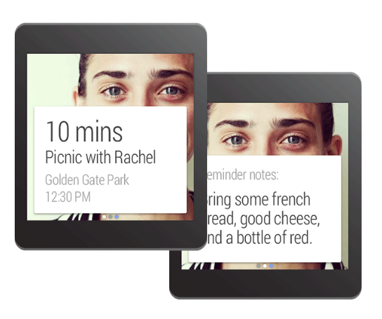
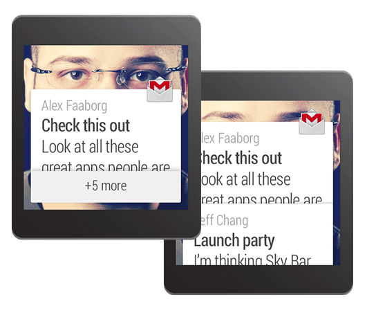
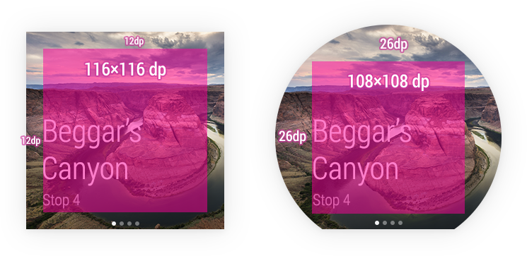

Android Wear: Introduction
GDG DevFest Fresno 2014
Justin Ribeiro
justin@stickmanventures.com
@justinribeiro +Justin Ribeiro justinribeiro
Slides: https://goo.gl/dsbkIQ
Wear is not your usual platform
Wear embodies simplicity
What developers sometimes think
Wear is not a my-phone-on-my-wrist
But it's just Android
Never more common words spoken
Just because we can,
doesn't mean we should

Source: Engadget - "Microsoft's Android Wear keyboard has you drawing every letter"
[why keyboards why]
Wear is about the micro-interaction
- We don't want to distract our user
- We don't want to take them out of the moment
- We don't want to annoy our user
Design Principles
They're important and we cannot ignore them
Focus on not stopping the user
all else will follow
Design for Big gestures
Think about stream cards first

- What user needs now
- If you're not relevent, your app will be muted
- Don't know when to be relevent? Use voice
Do one thing, really fast
Think about those seconds
Design for the corner of the eye
- We're wearing a watch, we don't want it in the way
- Grab and let go in a glance
Don’t be a constant shoulder tapper
- Overloading the user with info and words is a bad concept
- Doing that massive amounts of time is no good
Design Principles to UI Patterns
- Cards: somewhat similar Glass / Google Now
- Pages: a bundle of cards
- Stack: groupings of cards
- 2D picker: choose from list, select attribute
- Voice commands: invoke intents, take user input
Let's break it down: two actions
- User talks to us
- We talk to the user
User talks to us

- Voice actions via "OK Google"
- Capture reply via voice
- Our own APK runs on wearable
We talk to the user

- Context Stream: right information at the right time
- Low to zero interaction
That's a lot to take in...
and we haven't gotten to the code yet
The Wear SDK is pretty big
We can't cover it all today
Notifications
- Bridged notifications
- Enhanced notifications
- Fastest way to add a card into the user context stream
Let's build a notification - imports
import android.support.v4.app.NotificationCompat;
import android.support.v4.app.NotificationManagerCompat;
import android.support.v4.app.NotificationCompat.WearableExtender;
Let's build a notification - Builder
// Let's build a notification
NotificationCompat.Builder myNotification =
new NotificationCompat.Builder(this)
.setSmallIcon(R.drawable.ic_event)
.setContentTitle("I'm a title!")
.setContentText("DevFest 2014 Whooo Hooo")
.setContentIntent(myIntent);
// Get an instance of the NotificationManager service
NotificationManagerCompat notificationManager =
NotificationManagerCompat.from(this);
// Build and send
notificationManager.notify(myNotificationId, myNotification.build());
.setContentIntent() UX
- On handheld: touch notification and Intent invoked
- On Wear Device: swipe left, tap "Open", invoked on handheld
Adding additional options
NotificationCompat.Builder myNotification =
new NotificationCompat.Builder(this)
.setSmallIcon(R.drawable.ic_event)
.setContentTitle("I'm a title!")
.setContentText("DevFest 2014 Whooo Hooo")
.setContentIntent(myIntent)
.addAction(R.drawable.ic_something,
"More",
myOtherIntent);
.addAction() UX
- On handheld: Adjacent button on notification
- On Wear Device: swipe left to access
Ummm....these seem familiar...
If your app has notification using NotificationCompat, probably
Specifics for Wear
Adding a Wear only action WearableExtender.addAction()
NotificationCompat.Action myAction = new NotificationCompat.Action.Builder(...)
NotificationCompat.Builder myNotification =
new NotificationCompat.Builder(this)
.setSmallIcon(R.drawable.ic_event)
.setContentTitle("I'm a title!")
.setContentText("DevFest 2014 Whooo Hooo")
.extend(new WearableExtender().addAction(myAction));
Specifics for Wear
The Big View
BigTextStyle bigStyle = new NotificationCompat.BigTextStyle();
bigStyle.bigText("I'm supposed to be long but that might not fit into this slide, yada yada yada");
NotificationCompat.Builder myNotification =
new NotificationCompat.Builder(this)
.setSmallIcon(R.drawable.ic_event)
.setContentTitle("I'm a title!")
.setContentText("DevFest 2014 Whooo Hooo")
.addAction(R.drawable.ic_something, "More", myOtherIntent)
.setStyle(bigStyle);
The big view...but tiny on this slide.
Ugh, our icon looks horrible with that
Yes, we should be using NotificationCompat.WearableExtender()
NotificationCompat.WearableExtender extendMyWearable =
new NotificationCompat.WearableExtender()
.setHintHideIcon(true)
.setBackground(myMoreAwesomeImage);
Notification myNotification = new NotificationCompat.Builder(someContext)
.setContentTitle("Justin Says....")
.setContentText("Speeling is hard")
.setSmallIcon(R.drawable.ic_blahblah);
.extend(extendMyWearable)
.build();
Lot more with WearableExtender()
- See documentation @ developer.android.com
Speaking of a lot more...Pages
Maybe you just need to send a little more without forcing the user to their handheld
// Create builder for the main notification
NotificationCompat.Builder theMainNotification = new NotificationCompat.Builder(...);
// Create the second page
Notification theSecondPageNotification = new NotificationCompat.Builder(...);
// The pages become friends
Notification thePagesAll = new WearableExtender()
.addPage(theSecondPageNotification)
.extend(theMainNotification)
.build();
// send them!
notificationManager.notify(notificationId, thePagesAll);
Pages!
And maybe we want to send lots
We should probably stack our notifications
// Our group for the stack
final static String MY_GROUP_KEY = "group_things_such";
// Let's add this notification to this group
Notification myNotification = new NotificationCompat.Builder(someContext)
.setContentTitle("Get it together")
.setContentText("I'm important news")
.setSmallIcon(R.drawable.ic_blahblah);
.setGroup(MY_GROUP_KEY)
.build();
notificationManager.notify(notificationId1, myNotification);
Good, but we need a summary
Bitmap largeIcon = BitmapFactory.decodeResource(getResources(),
R.drawable.ic_large_icon);
Notification summary = new NotificationCompat.Builder(mContext)
.setContentTitle("2 new messages")
.setSmallIcon(R.drawable.ic_small_icon)
.setLargeIcon(largeIcon)
.setStyle(new NotificationCompat.InboxStyle()
.addLine("Alex Faaborg Check this out")
.addLine("Jeff Chang Launch Party")
.setBigContentTitle("2 new messages")
.setSummaryText("johndoe@gmail.com"))
.setGroup(MY_GROUP_KEY)
.setGroupSummary(true)
.build();
notificationManager.notify(notificationId3, summaryNotification);
Stacks!
The power in notifications
- The context stream cannot be underestimated
- Be picky: does my user need this information now?
And then we built some apps
- It's roughly the same as building an Android app
- Carvats include: sleep > Home, offload processing, no direct install, some apis not present, bluetooth debugging
Whoaaa no direct install?
- When you're debugging, it operates like normal Android; it will deploy direct to Wear device
- When you ship, the companion apk ships inside the handheld app and when the handheld app is installed, the Wear APK is sent to the device
Reasons why you might want to build an app
- You want to share data between handheld and wearable
- You want to implement a custom UI that is not BigTextStyle() or InboxStyle()
- You want sensor data
- More voice actions...action!
The power is in the messaging
- Wearable Data Layer API
- Node API
- Message API
- Data API
Node API
- Let's us know when two devices are connected
- If we know this, we can exchange other data
NodeApi.GetConnectedNodesResult nodes =
Wearable.NodeApi.getConnectedNodes(myGoogleApiClient);
Node API (continued)
We can also listen and be notified if this connection changes
public interface NodeListener {
void onPeerConnected(Node peer);
void onPeerDisconnected(Node peer);
}
See: NodeApi.NodeListener
Message API
- Low latency messaging as needed
- Should be ephemeral, smaller payloads
// Method
PendingResult
sendMessage(GoogleApiClient client, String nodeId, String action, byte[] data);
// Listener
public interface MessageListener {
void onMessageReceived(MessageEvent messageEvent);
}
Data API
- Store data to share between device
- Buffer automatically if disconnected
- Storage: DataItem = smaller, Asset = larger
// Method
PendingResult
putDataItem(GoogleApiClient client, PutDataRequest request);
PendingResult
getDataItem(GoogleApiClient client, Uri uri);
Data API (continued)
- Receiving data? WearableListenerService is the one!
- Listen for event we want, say onDataChanged()
// ... snip ...
@Override
public void onDataChanged(DataEventBuffer dataEvents) {
for (DataEvent event : dataEvents) {
if (event.getType() == DataEvent.TYPE_DELETED) {
Log.d(TAG, "DataItem deleted: " + event.getDataItem().getUri());
} else if (event.getType() == DataEvent.TYPE_CHANGED) {
Log.d(TAG, "DataItem changed: " + event.getDataItem().getUri());
}
}
}
// ... snip ...
Bring on the custom UI!
Whoooa there partner: let's have a talk.
- Notifications generally should be on the handheld and synced; you don't really want to reinvent the wheel
- Custom's only work on the wearable, not the handheld
- Custom's don't sync
That now said, the unofficial UI lib
- If you use the Android Studio Project Wizard, it's automagically included
- Doing this somewhere else? Add to build.gradle:
dependencies {
compile fileTree(dir: 'libs', include: ['*.jar'])
compile 'com.google.android.support:wearable:+'
compile 'com.google.android.gms:play-services-wearable:+'
}
You get a host of classes for use...
- BoxInsetLayout, Card Fragment, CircledImageView
- GridViewPager, GridPagerAdapter, FragmentGridPagerAdapter
- ConfirmationActivity, DismissOverlayView
- WatchViewStub
Which helps manage the space you have
Hellooooo? Are you there watch?
Voice Actions
Three types of voice actions
- System Provided
- App Provided
- Free-Form Speech
System Provided
- Task Based
- Built in to the platform
- Specified with intent-filter
System Provided (continued)
<activity android:name="MyNoteActivity">
<intent-filter>
<action android:name="android.intent.action.SEND" />
<category android:name="com.google.android.voicesearch.SELF_NOTE" />
</intent-filter>
</activity>
App Provided
- App based
- Declared like a Launcher icon
App Provided (continued)
<activity android:name="StartRunActivity" android:label="MyRunningApp">
<intent-filter>
<action android:name="android.intent.action.MAIN" />
<category android:name="android.intent.category.LAUNCHER" />
</intent-filter>
</activity>E;
Speech Recognizer
- Take speech from user
- Useful when you need to take input > process
Speech Recognizer (continued)
private void displaySpeechRecognizer() {
Intent intent = new Intent(RecognizerIntent.ACTION_RECOGNIZE_SPEECH);
intent.putExtra(RecognizerIntent.EXTRA_LANGUAGE_MODEL,
RecognizerIntent.LANGUAGE_MODEL_FREE_FORM);
startActivityForResult(intent, SPEECH_REQUEST_CODE);
}
That's a lot of information for after lunch
We've only touched the surface, so much more!